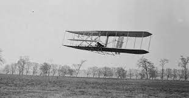

|  | อากาศยานชนิดหนึ่งมีปีกโค้งนูน ใช้เครื่องยนต์ขับเคลื่อน ลอยตัวได้ด้วยการให้พลังงานกลแก่อากาศโดยรอบ ก่อให้เกิดแรงยกตัวต้านแรงโน้มถ่วงของโลก |
||||||||||||||
|---|---|---|---|---|---|---|---|---|---|---|---|---|---|---|---|
| ประวัติเครื่องบินิน |
|
||||||||||||||
| ในปี พ.ศ. ๒๓๙๑ ชาวอังกฤษชื่อ สตริงเฟลโลว์ (Stringfellow) ได้คิดสร้างเครื่องบินจำลอง ปีกชั้นเดียว ปีกเสี้ยมเรียวเล็กลงไปที่ปลาย ส่วนบนโค้งนิดหน่อยที่ชายปีกไหวตัวได้หางยาวเป็น ส่วนพอดี ใช้ใบพัดสี่กลีบสองข้าง ใช้ไอน้ำเป็นบ่อเกิดแห่งกำลังฉุด เครื่องบินจำลองนี้แขวนไว้ที่ลวด เมื่อแล่นตามแนวลวดไปตัวเครื่องบินก็เริ่มยกขึ้นเอง เมื่อถึงปลายลวด เครื่องจะสลัดตัวหลุดออก แล้วบินไปโดยลำพัง ในการทดลองคราวนี้ บินไปได้ ๔๐ เมตร ชนกับผ้าใบที่ขึงกั้นเอาไว้ เลยตกลงมา นับว่า เป็นการบินครั้งแรก ที่ทำได้ปลอดภัย ด้วยอากาศยานที่หนักกว่าอากาศ แต่ไม่มีคนขับขี่ ชาวอังกฤษผู้นี้หยุดการทดลองเสีย หาได้ทำให้ความสำเร็จนี้ใหญ่โตพอที่คนจะบินได้ไม่ ศาสตราจารย์ชาวอเมริกันชื่อ ซามูแอล พี แลงลีย์ (Samuel P. Langley) ได้ทำการทดลอง กฎการรับน้ำหนักของแพนอากาศ ซึ่งเป็นแผ่นพื้นที่ราบบางเคลื่อนที่ในอากาศด้วยความเร็ว และมุมปะทะต่างๆ โดยใช้โต๊ะหมุนรอบๆ ตัวด้วยมุมชันขึ้นทีละขั้นๆ ยิ่งกว่านั้น ยังได้สร้างเครื่องบินจำลองปีกสองชั้น มีหาง มีเครื่องบังคับแบบอัตโนมัติ ในการทดลองสามารถบินวนอยู่ได้กว่า ๓ รอบ คิดเป็นระยะทางกว่า ๑,๐๐๐ เมตร รัฐบาลอเมริกันมองเห็นประโยชน์จึงอนุมัติเงินให้สร้างขนาด ใหญ่ต่อมาอีก ๕ ปี ก็สร้างสำเร็จ เป็นรูปเครื่องบินสองปีกเรียงตามกัน ใช้เครื่องยนต์ ๓๐ แรงม้า ฉุดใบพัดทั้งสอง การทดลองได้ปล่อยเครื่องบินจากเรือนแพในน้ำ เสาค้ำปีกหน้าเกาะติดอยู่กับรถ ซึ่งใช้เป็นลานบิน ช่างเครื่องปลดเสานี้ให้หลุดออกจากรถนั้นช้าไป จึงเป็นเหตุให้หัวเครื่องบิน เงยขึ้นไม่สำเร็จ ในที่สุดก็ตกน้ำห่างออกไปราวๆ ๑๐ เมตร การทดลองครั้งที่สองเมื่อได้นำมาซ่อม แล้วปรากฏว่า เสาค้ำปีกหลังไม่ยก แต่ลากไป ทำให้ปีกหลัง และหางชำรุด เป็นอันว่าการบินนี้ไม่สำเร็จ การทดลองได้ล้มเลิกไปเพราะท่านศาสตราจารย์แลงลีย์ตาย นอกจากการทดลองด้วยเครื่องบินจำลองแล้ว ยังมีพวกนักร่อนซึ่งฝึกใช้ปีกพยุงตัวเองลงมาจากที่สูง เพื่อหาความชำนาญ และความรู้ เกี่ยวกับการบิน ชาวเยอรมันชื่อ ออตโต ลิเลียนธาล (Otto Lilienthal) เป็นผู้นำคนแรกที่ทำการร่อนได้สำเร็จจำนวนมากครั้งที่สุด รูปร่างเครื่องร่อนคล้ายนก ซึ่งมีแต่ปีกและนักร่อนแขวนตัวเองไว้กึ่งกลาง ขยับตัวเองให้เลื่อนไปมา เพื่อใช้น้ำหนักถ่วงเครื่องร่อน ให้ทรงตัวอยู่ในลักษณะอาการที่ต้องการ ในการร่อนครั้งต่อๆ มาจึงคิดใช้หางเสือขึ้นลง มีเชือกล่ามติดเข้ากับศรีษะ ผงกลงข้างหน้า หรือแหงนกลับหลัง เพื่อบังคับเครื่องร่อนลง หรือ แฉลบขึ้น ในลมซึ่งมีความเร็ว ๓๒ กิโลเมตรต่อหนึ่งชั่วโมง ลิเลียนธาลสามารถร่อนไปได้ตรงๆ และระดับในโอกาสที่ลมแรงมากๆ เขาก็ปล่อยให้ลมยกตัวขึ้นโดยไม่วิ่งไปข้างหน้าเสียเลย และหลายครั้งที่ปรากฏว่า ตัวลอยขึ้นสูงกว่ายอดเขา แต่ตามปกติมักจะเสียความสูงไปราวๆ หนึ่งในสาม ของระยะทางที่ร่อนได้ เพื่อทดลองเครื่องบังคับหางเสือขึ้นลง ลิเลียนธาลร่อนเข้าไปในอากาศมวล เครื่องร่อนเสียอาการทรงตัวมากจนแก้ไม่ทัน หัวปักลงมาชนพื้นดิน ต่อมาอีก ๒-๓ ชั่วโมงก็เสียชีวิต เมื่อ พ.ศ. ๒๔๓๙ แต่สถิติการทดลองต่างๆ เกี่ยวกับรูปร่าง ลักษณะ และส่วนโค้งของปีก ฯลฯ เหล่านี้เป็นประโยชน์อย่างยิ่งสำหรับช่วยให้คิดสร้างเครื่องบินสำเร็จในกาลต่อมาสองพี่น้องชาวอเมริกันสกุลไรท์ (Wright) เมื่อยังเด็กได้ประกอบภารกิจในโรงพิมพ์ส่วนตัว ต่อมา จึงเปลี่ยนโรงพิมพ์เป็นโรงสร้างจักรยาน ซึ่งให้บทเรียนในเรื่องจักรกลมาก ทั้งสองคนเอาใจใส่ในวิชาการร่อนของลิเลียนธาล เป็นพิเศษ และลงแรงลงทุนศึกษาสถิติ ที่นักร่อนผู้มีชื่อได้ทำไว้ ยิ่งกว่านั้นยังได้หาหนังสือของนักร่อน หรือหนังสือ ที่เกี่ยวกับวิชาการบินต่างๆ มาศึกษา และเริ่มงานโดยการค้นหาวิธีที่จะอยู่ในอากาศให้ได้นานพอ หาความคุ้นเคย และการเรียนรู้สภาพของการบินได้
|
|||||||||||||||